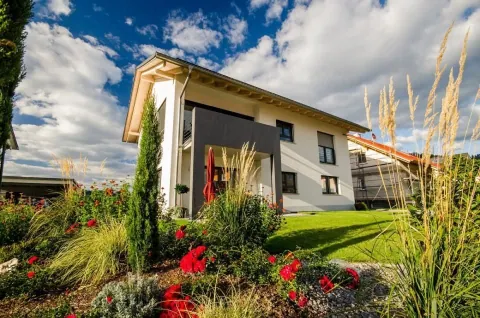
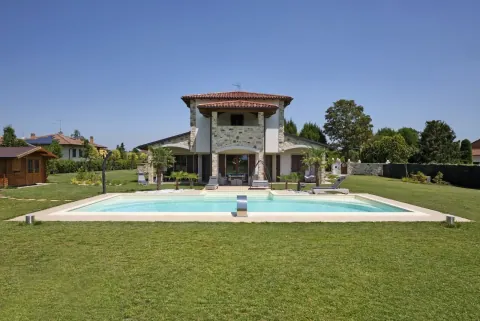
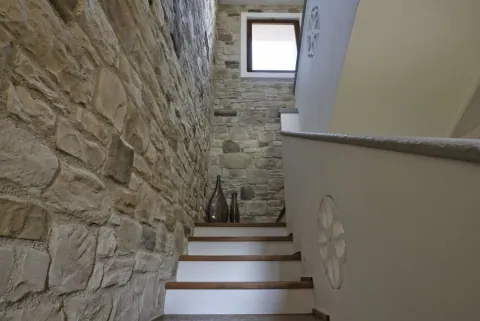
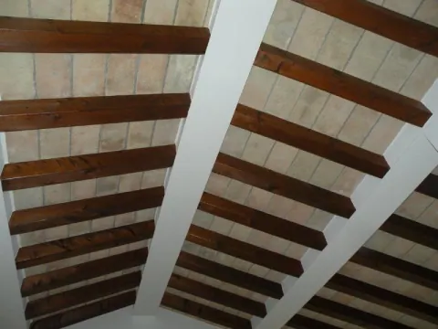
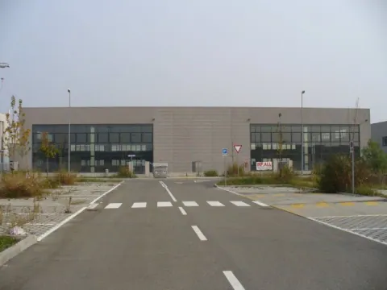
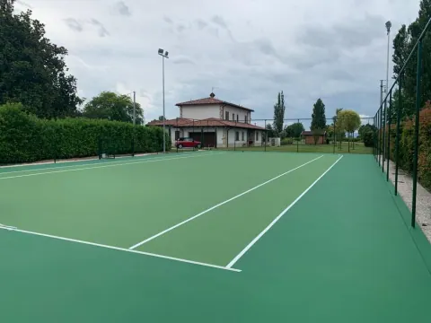

01 / Case
Villetta con giardino
Il telaio scuro del portico incornicia il giardino. Sopra, lo sporto della falda lascia in vista le teste dei travetti.
Parliamo della tua casaCostruzioni Parma
Ogni dettaglio, un passo avanti
Disegno su carta
Preparazione della visita
Dalla prima linea, fino allo spazio abitato.
Impresa edile · Parma
Dalle fondazioni alle finiture, costruiamo e ristrutturiamo a Parma e provincia da oltre quarant’anni.
03 / 03 Dal disegno allo spazio
Scorri per costruire
07 / 07
La luce passa attraverso le vetrate e risale dal fondo della piscina.
Dall’archivio Volpi
Case, interni, spazi all’aperto e luoghi di lavoro. Fotografie delle realizzazioni Volpi.

01 / Case
Il telaio scuro del portico incornicia il giardino. Sopra, lo sporto della falda lascia in vista le teste dei travetti.
Parliamo della tua casa
02 / Esterni e sport
Una fascia chiara separa l’acqua dal prato. Il bordo cambia direzione sul lato verso la casa, in asse con il portico della villa.
Parliamo della tua piscina
03 / Interni e coperture
I bordi scuri delle pedate scandiscono le alzate bianche. La rampa segue la trama irregolare del muro in sasso fino al pianerottolo.
Parliamo della tua scala
04 / Interni e coperture
Le travi in legno disegnano le due falde. Il colore chiaro degli appoggi mette in evidenza il punto in cui ogni trave vi si innesta.
Parliamo della tua copertura
05 / Industriale
I montanti suddividono le due grandi vetrate in campate regolari. Al centro, il tratto pieno della facciata si allinea alla strada di accesso.
Parliamo del tuo edificio
06 / Esterni e sport
Le linee bianche delimitano il rettangolo di gioco. Oltre la fascia verde perimetrale si leggono i montanti della recinzione e i pali di illuminazione.
Parliamo del tuo campoVolpi Costruzioni
Da oltre quarant’anni seguiamo case, luoghi di lavoro e ristrutturazioni a Parma e provincia.
Nel chiavi in mano coordiniamo maestranze, materiali e lavorazioni. Dal primo sopralluogo alla consegna hai un unico interlocutore.

Case, ville e condomini. Seguiamo le lavorazioni dal tracciamento dell’edificio alla posa delle finiture.
Rinnoviamo case, appartamenti, bagni e cucine, coordinando opere murarie, impianti e finiture.
Restauro degli esterni, ripristino delle superfici e isolamento con cappotto termico.
Coperture, impermeabilizzazioni e lattonerie, dal rilievo delle infiltrazioni al ripristino.
Capannoni ed edifici industriali, artigianali e commerciali.
Piscine, campi da tennis, opere in sasso e interventi di adeguamento sismico.
Ci incontriamo in studio, definiamo il progetto e apriamo il cantiere. Seguiamo i lavori fino al giorno in cui entri nella tua casa.
Contatti